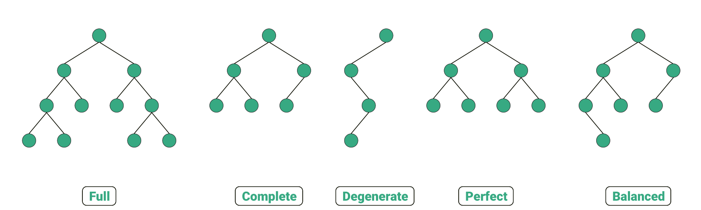

Binary Trees
Table of Contents
1. Binary Tree
Binary Tree Algorithms for Technical Interviews - Full Course
- Every node has at MOST 2 children (0, 1 or 2 children per node)
- Exactly 1 root
- Exactly 1 path between root and any node.
Empty tree (0 Nodes), is also a Binary Tree.
1.1. Types Of Binary Trees
1.1.1. Binary Tree vs Binary Search Tree
Binary Search Tree (BST): For Each node its left descendants are less than or equal to the current node, which is less than the right descendants.
// A Binary Search Tree 8 / \ 4 10 / \ \ 2 6 20 // NOT a Binary Search Tree 8 / \ 4 10 / \ \ 2 12 20
- Balanced vs Unbalanced
A
Binary Treeis balanced if the difference between the Height of left & right subtree for every node is not more thankk(usuallyk=1).Unbalanced tree(access, insert & delete) operations are `O(n)` in worst case.Balanced tree(access, insert & delete) operations are `O(log n)` in worst case.
- Complete Binary Tree
Every level of the tree is fully filled, except for perhaps the last level. (To the extent that the last level is filled, it is filled left to right)
// Not a complete Binary Tree 10 / \ 5 20 / \ \ 3 7 30 // Complete Binary Tree 10 / \ 5 20 / \ / 3 7 15
- Full Binary Tree
Every node has either zero or two children. (No node has only one child). We can also say a `full binary tree` is a binary tree in which all nodes except leaf nodes have two children.
// Not a Full Binary Tree 10 / \ 5 20 \ / \ 12 3 7 / \ 9 18 // Full Binary Tree 10 / \ 5 20 / \ 3 7 / \ 9 18
- Perfect Binary Tree
Is both Full and Complete. All leaf nodes will be at the same level and this level has the maximum number of nodes.
// Perfect Binary Tree 10 / \ 5 20 / \ / \ 9 18 3 7

class Node { constructor(val){ this.val = val this.left = null this.right = null } } const a = new Node('A') const b = new Node('B') const c = new Node('C') const d = new Node('D') const e = new Node('E') const f = new Node('F') a.left = b a.right = c b.left = d b.right = e c.right = f // a // / \ // b c // / \ \ // d e f const iterativeDepthFirstValues = (root) => { if (!root) return [] const result = [] const stack = [root] while (stack.length > 0){ const current = stack.pop() result.push(current.val) // Favours left hand side if(current.right) stack.push(current.right) if(current.left) stack.push(current.left) // Favours right hand side // if(current.left) stack.push(current.left) // if(current.right) stack.push(current.right) } return result } const recursiveDepthFirstValues = (root) => { if (!root) return [] const leftValues = recursiveDepthFirstValues(root.left) // [b, d, e] const rightValues = recursiveDepthFirstValues(root.right) // [c, f] return [root.val, ...leftValues, ...rightValues] } const breadthFirstValues = (root) => { if (!root) return [] const result = [] const queue = [root] while (queue.length > 0) { const current = queue.shift() result.push(current.val) // Favours Left to Right if (current.left) queue.push(current.left) if (current.right) queue.push(current.right) } return result } // Utilizes BFS const iterativeIncludes = (root, target) => { if (!root) return [] const queue = [root] while (queue.length > 0) { const current = queue.shift() if (current.val === target) return true if (current.left) queue.push(current.left) if (current.right) queue.push(current.right) } return false } // Utilizes DFS const recursiveIncludes = (root, target) => { if (!root) return false if (root.val === target) return true return recursiveIncludes(root.left, target) || recursiveIncludes(root.right, target) } const iterativeTreeSum = (root) => { if (!root) return false let sum = 0 const queue = [root] while (queue.length > 0) { const current = queue.shift() sum += current.val if (current.left) queue.push(current.left) if (current.right) queue.push(current.right) } return sum } const recursiveTreeSum = (root) => { if (!root) return null return root.val + recursiveTreeSum(root.left) + recursiveTreeSum(root.right) } // BFS const minTreeValue = (root) => { let min = Infinity if (!root) return null const queue = [root] while (queue.length > 0) { const current = queue.shift() if (current.val < min) min = current.val if (current.left) queue.push(current.left) if (current.right) queue.push(current.right) } return min } // DFS const recursiveMinTreeValue = (root) => { if (!root) return Infinity return Math.min(root.val, recursiveMinTreeValue(root.left),recursiveMinTreeValue(root.right)) } // Finds the maximum path from root to leaf (DFS) const maxPathSum = (root) => { if (!root) return -Infinity if (root.left === null && root.right === null) return root.val // Leaf Node: root.left === null && root.right === null const leftVal = maxPathSum(root.left) const rightVal = maxPathSum(root.right) return root.val + Math.max(leftVal, rightVal) } console.log(iterativeDepthFirstValues(a)) console.log(recursiveDepthFirstValues(a)) console.log(breadthFirstValues(a)) console.log(iterativeIncludes(a, 'C')) // Should return true console.log(iterativeIncludes(a, 'G')) // Should return false console.log(recursiveIncludes(a, 'C')) console.log(recursiveIncludes(a, 'G')) const num1 = new Node(11) const num2 = new Node(35) const num3 = new Node(12) const num4 = new Node(6) const num5 = new Node(3) const num6 = new Node(2) num1.left = num2 num1.right = num3 num2.left = num4 num2.right = num5 num3.right = num6 // 11 // / \ // 35 12 // / \ \ // 6 3 2 console.log(recursiveTreeSum(num1)) // Should be 69 console.log(iterativeTreeSum(num1)) // Should be 69 console.log(minTreeValue(num1)) // Should be 2 console.log(recursiveMinTreeValue(num1)) // Should be 2 console.log(maxPathSum(num1)) // Should be 52 console.log(reverseBinaryTree(a))